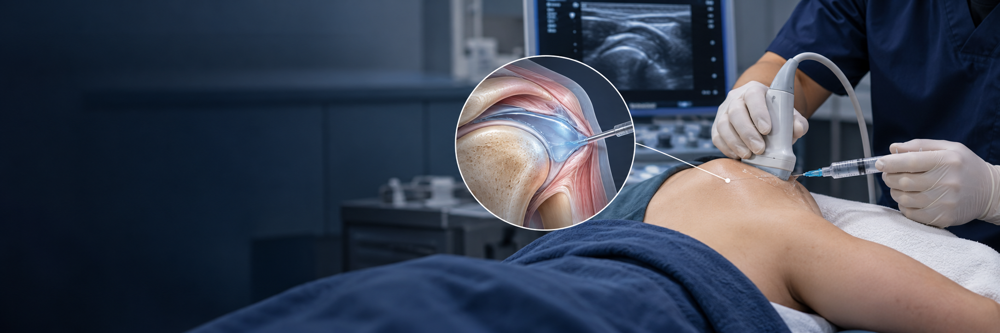

오십견 수액 팽창술이란?
오십견으로 굳어진 어깨 관절낭에 생리식염수와 국소마취제 등의 약물을 주입해 관절낭을 늘려주는 치료입니다. 필요에 따라 스테로이드를 함께 사용합니다.
관절의 운동 범위와 통증을 확인해 적용 여부를 판단하며 시술 후 상태에 맞는 운동과 재활을 함께 진행합니다.
어깨 관절 안에 생리식염수와 약물을 주입해 관절낭을 팽창시키고
통증과 관절 움직임의 개선을 도모하는 치료입니다.

오십견으로 굳어진 어깨 관절낭에 생리식염수와 국소마취제 등의 약물을 주입해 관절낭을 늘려주는 치료입니다. 필요에 따라 스테로이드를 함께 사용합니다.
관절의 운동 범위와 통증을 확인해 적용 여부를 판단하며 시술 후 상태에 맞는 운동과 재활을 함께 진행합니다.

능동·수동 운동 범위를 확인해 어깨가 굳은 정도를 평가합니다.
힘줄 파열 등 다른 원인을 구분하고 시술과 재활 운동을 함께 계획합니다.
진찰과 필요한 검사로 관절이 굳지 않은 다른 질환을 확인합니다.
영상으로 주입 위치를 확인하고 관절 내에 수액과 약물을 주입합니다.
시술 후 통증에 맞춰 스트레칭과 재활을 단계적으로 안내합니다.
어깨가 굳은 원인과 운동 제한의 정도를 확인합니다.
기존 치료 반응과 다른 어깨 질환을 함께 평가합니다.
안내받은 스트레칭·재활은 꾸준히 하되 통증을 참는 무리한 움직임은 피하세요.
스테로이드 사용 시 당뇨 환자는 혈당을 살피고, 발열·붓기·통증 악화 시 진료받으세요.